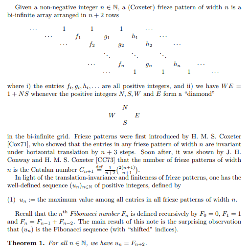

Coxeter frieze patterns
In this project, we formalise in Lean 4 the claim that the sequence of maximums of values of (Coxeter) frieze patterns is the Fibonacci sequence. More precisely:

GitHub
Blueprint
LaTeX file
Paper